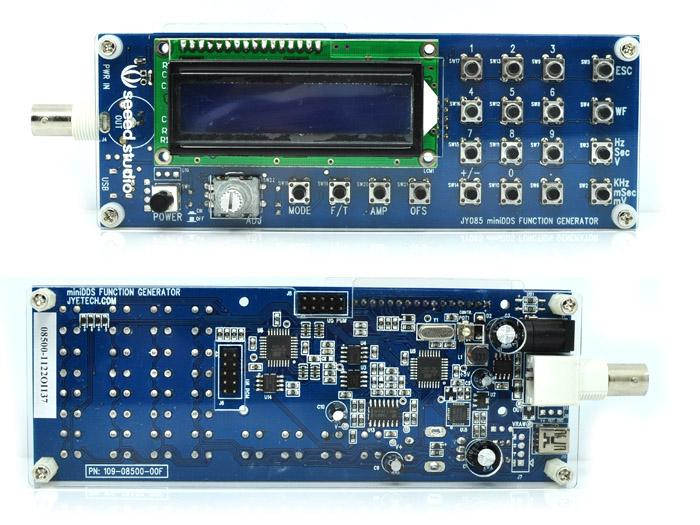

The FG085 is a low cost yet versatile function generator capable of producing many different waveforms. As an easy-to-use tool operation of FG085 is very simple and straightforward. It is an ideal test/experiment tool for electronics hobbyists and students.
Model: FG085 miniDDS

In spite of that no limited range is set for frequency entry it should be aware of that there are practical ranges for output frequency due to the low resolution 8-bit DAC and slow sample rate (2.5Msps). Out of these ranges signal quality will degraded as larger distortions and jitters appear. The acceptable ranges depend on actual applications. For FG085 output frequency within following range is reasonably good for most applications.
| Function | Range |
|---|---|
| Sine | 0 – 200KHz |
| Square | 0 – 10KHz |
| Triangle | 0 – 10KHz |
| Ramp | 0 – 10KHz |
| Staircase | 0 – 10KHz |
The following table lists the details about servo signal settings
| Setting | Descriptions | Acceptable Range | Default |
|---|---|---|---|
| SV.PWmin | The minimum pulse width allowed | 0 – 26000 uSec | 1000 |
| SV.PWmax | The maximum pulse width allowed | 0 – 26000 uSec | 2000 |
| SV.PWmid | Pulse width corresponding to servo nurture position | 0 – 26000 uSec | 1500 |
| SV.PWinc | [ADJ] step size in Servo Pos mode | 0 – 26000 uSec | 100 |
| SV.RunStep | Step size of pulse width change in Servo Run mode | 0 – 26000 uSec | 100 |
| SV.RunRate | Duration of one step in Servo Run mode | 0 – 6.5 uSec | 0.1 |
| SV.Cycle | Servo signal cycle | 0 – 26000 uSec | 20000 |
| SV.AMPmax | The maximum pulse amplitude allowed | 0 – 10.0V | 5.0V |
This documentation is licensed under the Creative Commons Attribution-ShareAlike License 3.0 Source code and libraries are licensed under GPL/LGPL, see source code files for details.
Links to external webpages which provide more application ideas, documents/datasheet or software libraries.
Copyright (c) 2008-2016 Seeed Development Limited (www.seeedstudio.com / www.seeed.cc)